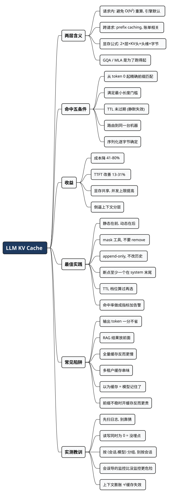

LLM 的 KV Cache：一个时间戳，能让你的账单比不开缓存还贵
Posted on 二 01 9月 2026 in AI
| Abstract | LLM 的 KV Cache 原理、命中规则与工程实践 |
|---|---|
| Authors | Walter Fan |
| Category | AI |
| Status | v1.0 |
| Updated | 2026-09-01 |
| License | CC-BY-NC-ND 4.0 |
大纲
展开看看
- 核心结论：KV Cache 不是省钱技巧，是提示词的架构约束——命中要求前缀逐 token 一致，这条要求反过来决定了你怎么排 system prompt、工具定义和历史消息。
- 先分清两个 KV Cache：单次请求内的（引擎默认干的，你管不着）和跨请求的 prefix caching（账单上那个，你说了算）。
- 命中规则：从第 0 个 token 起的精确前缀匹配、块粒度、最小长度门槛、TTL、路由亲和。四家厂商的具体数字列了张表。
- 省钱之外：首字延迟（TTFT）、GPU 显存与吞吐、长上下文 Agent 的可行性。
- 一笔能对的账：20 轮 Agent 会话，开缓存省 82%；但前缀带秒级时间戳时，反而比不开缓存贵 25%。
- 真实数据：我扫了自己四个 harness 最近 30 天的日志——怀疑的对象是清白的（88% 命中）；而那个吓人的低命中率是没埋点造成的假象，我还因为统计粒度不对，被同一个坑绊了两次。附可直接运行的脚本。
- 最佳实践：分层排版、确定性序列化、mask 而非 remove、append-only、断点放哪、路由亲和、把命中率做成指标。
- 常见陷阱：把 RAG 结果放前面、动态工具集、摘要压缩重写历史、盲目上 1h TTL、多租户缓存串味、以及"以为缓存等于模型记住了"。
- 自查清单：一张能直接抄走的表。
我先说个让人不太舒服的算术。
假设你在跑一个 Agent：system prompt 加工具定义一共 12K token，每轮对话追加 1K，一次任务跑 20 轮。用 Claude Sonnet 的价目表算（输入 $3/MTok，缓存读 $0.30/MTok，5 分钟缓存写 $3.75/MTok）：
- 不开缓存：43 万输入 token，$1.29
- 开缓存且前缀稳定：$0.236，省掉 82%
- 开了缓存，但 system prompt 顶部有个精确到秒的时间戳：$1.61
看清楚第三行。你老老实实打了 cache_control，结果比什么都不做还贵了 25%。因为每轮前缀都变，你每轮都在付 1.25 倍的缓存写入费，却一次都没读到过。
这不是玄学，是算术：缓存写比正常输入贵，缓存读比正常输入便宜。你只在"写一次、读多次"的时候赚钱。前缀一不稳，你就只写不读，纯亏。
所以这篇文章想让你带走的那句话是：
KV Cache 不是一个能顺手薅的省钱技巧，它是一条架构约束——它规定了你的提示词必须怎么排版。
省 token 只是遵守这条约束之后的副产品。真正的变化是，你以后组织 system prompt、工具定义和对话历史时，得像维护一个对外 API 一样谨慎：前缀是接口，改它是破坏性变更。
关于 token 成本的整体治理思路，我在 《LLM API 越来越贵，别让 token 像自来水一样哗哗流》 和 《上下文管理之渐进式披露》 里写过。这篇专门啃 KV Cache 这一块硬骨头。
一、先把两个 "KV Cache" 分开
这是最容易混的一点，不分清后面全是糊涂账。"KV Cache" 这四个字在两个层面上被使用，含义完全不同。
1. 请求内的 KV Cache：推理引擎默认就干的事
Transformer 生成文本是自回归的：吐第 N 个 token 时，要让它跟前面 N-1 个 token 做注意力计算。注意力的核心是三个东西——Query（我在找什么）、Key（每个位置的索引）、Value（每个位置的内容）。
关键在于：已经生成的 token，它的 K 和 V 是不变的。 第 5 个 token 的 Key 向量，在生成第 6 个、第 60 个、第 600 个 token 时，永远是同一个值。
那还每次重算干嘛？存下来就行了。这就是 KV Cache 最原始的意思——把每一层、每个位置算出来的 K 和 V 缓存在显存里，生成下一个 token 时直接查表。
省了多少？没有它，生成 N 个 token 的注意力计算是 O(N²)；有了它，每步只算新 token 的那一份，降到 O(N)。这是所有推理引擎（vLLM、SGLang、TensorRT-LLM，以及所有云 API 背后）的默认行为，不需要你做任何事。
代价是显存。每个 token 要存多少字节，有个很好记的公式：
每 token 的 KV 字节数 = 2 × 层数 × KV头数 × 每头维度 × 每元素字节数
↑
K 和 V 各存一份
拿 Llama 3.1 70B 举例（80 层，GQA 下 8 个 KV 头，每头 128 维，BF16 即 2 字节）：
2 × 80 × 8 × 128 × 2 = 327,680 字节 ≈ 320 KB / token
32K 上下文的一个请求，光 KV Cache 就吃掉 10.7 GB 显存。如果这模型用的是老式的 MHA（64 个 KV 头），这个数字要乘 8——86 GB，一张 H100 装不下一个请求。
这就是为什么现在的模型几乎全部改用 GQA（多个 Query 头共享一组 KV 头）或者 MLA（把 KV 压缩到低维隐空间）。不是为了跑得快，是为了跑得起。 DeepSeek V3 用 MLA 把每 token 压到约 50 KB，32K 上下文只要 1.6 GB，671B 的模型才有可能开 128K 窗口。
2. 跨请求的 Prefix Caching：账单上那个
请求内的缓存，请求一结束就该释放了。但工程师很快发现一件事：不同请求的开头，往往长得一模一样。
你的 Agent 有 12K token 的 system prompt 加工具定义，一天调用十万次——这 12K token 的 K/V，每次都要从头算一遍 prefill，纯属浪费。
于是有了 prefix caching（Anthropic 和 OpenAI 叫 prompt caching，DeepSeek 叫上下文硬盘缓存）：把已经算好的前缀 KV 存起来，下次来一个请求，如果开头能对上，直接复用。
vLLM 的实现很值得一看，因为它把命中条件讲得最直白。它把 KV Cache 切成固定大小的 block，每个 block 用一个哈希标识：
block_hash = hash(父block的哈希, 本block的token序列, 额外因子)
↑ ↑
绑定了整条前缀链 LoRA id / 多模态输入 / cache_salt
三件事从这个公式里直接能读出来：
- 哈希链绑定了整条前缀。 第 3 个 block 的哈希包含第 2 个的哈希，第 2 个包含第 1 个的。任何一个 token 变了，从它往后的所有 block 全部作废。
- 只缓存完整的 block。 半个 block 不算数，所以命中是有粒度的，不是逐 token 的。
- 额外因子决定了隔离边界。 多租户环境里，vLLM 支持
cache_salt——加了盐，只有同盐的请求才能复用同一份 KV。这个设计不是为了性能，是为了安全，后面会讲。
淘汰策略是 LRU：显存不够时，先赶引用计数为 0 的、最久没用的 block。
这一层才是你能控制、也必须控制的。 后面说的"命中"，全指这一层。
二、命中规则：五个必须同时满足的条件
写代码之前，先把游戏规则背下来。
规则 1：从第 0 个 token 起的精确前缀匹配
这是最硬的一条。缓存匹配的是从头开始、连续不断的一段 token，不是"内容相似"，也不是"包含关系"。
上次请求：[你是一个代码审查助手][工具定义...][用户: 看看这段 Go]
本次请求：[你是一个代码审查助手][工具定义...][用户: 看看这段 Python]
↑─────────── 命中 ───────────↑ ↑─ 从这里开始重算 ─↑
上次请求：[2026-09-01 21:30:15][你是一个代码审查助手][工具定义...]
本次请求：[2026-09-01 21:30:47][你是一个代码审查助手][工具定义...]
↑ 第一个 token 就不一样 → 后面全部重算，一个字都没省
第二个例子就是那个经典的自伤操作。Manus 团队在他们的 Agent 工程复盘里点名批评过：在 system prompt 开头放精确到秒的时间戳，"确实能让模型知道现在几点，但也顺手杀死了你的缓存命中率"。
规则 2：有最小长度门槛，短 prompt 根本不缓存
低于门槛，你标什么都没用，请求会被当成没有缓存处理。各家的门槛不一样：
| 厂商 | 最小可缓存长度 | 缓存读价格 | 缓存写价格 | 有效期 |
|---|---|---|---|---|
| OpenAI（GPT-5.6+） | 1,024 token | 0.1× 输入价 | 1.25× 输入价 | 闲置 5–10 分钟清除，最长 1 小时 |
| OpenAI（更早的模型） | 2,048 token | 约 5 折 | 不额外收费 | 同上 |
| Anthropic Claude（Opus/Sonnet） | 1,024 token | 0.1× 输入价 | 1.25×（5 分钟）/ 2×（1 小时） | 5 分钟或 1 小时，每次命中自动续期 |
| Anthropic Claude（Haiku） | 2,048 token | 0.1× 输入价 | 同上 | 同上 |
| Gemini 2.5 Flash / Pro | 2,048 token | 约 0.1× 输入价 | 隐式缓存不额外收费 | 由平台管理 |
| Gemini 3.x 系列 | 4,096 token | 同上 | 同上 | 同上 |
| DeepSeek | 自动，无需声明 | 约 1/10 输入价 | 不额外收费 | 数小时到数天，best-effort |
（数字以各家官方文档为准，且变动频繁——这张表的意义是让你知道要去查哪几个数，别拿它当长期依据。）
有两个门道值得单说：
- OpenAI 的命中是 128 token 步进的。 门槛 1024 之后，实际命中数只会是 1024、1152、1280…… 所以你的稳定前缀是 1100 token 的话，只有 1024 个能命中，剩下 76 个白算。
- Anthropic 是两段计价。 写比正常输入贵，读比正常输入便宜。5 分钟档写 1.25×、读 0.1×，意味着命中一次就回本；1 小时档写 2×，要命中两次才回本。这个账后面还要算。
规则 3：TTL 会到期，而且是静默的
缓存不是永久的。Anthropic 默认 5 分钟（每次命中自动续期），OpenAI 大约闲置 5–10 分钟清除、最长一小时内必删，DeepSeek 是几小时到几天不等且明确说了是 best-effort。
麻烦在于过期不会报错。你的请求照样成功返回，只是这次全价。所以你必须自己盯着响应里的字段，不然亏钱亏得悄无声息。
规则 4：得路由到同一台机器
云 API 会尽量把带相同前缀的请求路由到最近处理过它的服务器上。自建的话，这事得你自己管——vLLM 集群里，同一个会话的请求必须落到同一个 worker，缓存才在那儿。做法通常是按 session id 做一致性哈希路由。
忘了这一步，你会看到一个诡异现象：本地单机测试命中率 90%，上线之后掉到 20%。 不是代码错了，是请求被负载均衡打散了。
规则 5：序列化必须逐字节确定
这条最阴，因为它看起来根本不像 bug。
# 危险：字典的 key 顺序在某些场景下不保证稳定，
# 而且 json.dumps 默认会在逗号后加空格
payload = json.dumps(tool_schema)
# 安全：固定 key 顺序、固定分隔符、关掉 ASCII 转义
payload = json.dumps(tool_schema, sort_keys=True,
separators=(",", ":"), ensure_ascii=False)
内容一模一样，序列化出来差一个空格，token 序列就不同，缓存就没了。跨语言、跨版本的序列化差异更是重灾区——vLLM 甚至专门提供了 sha256_cbor 哈希算法，就是为了保证跨语言、跨版本可复现。
三、省 token 之外，你还赚到什么
如果只盯着账单，你会低估这件事。
首字延迟（TTFT）：用户能直接感觉到
缓存命中省掉的是 prefill 阶段的计算。prefill 就是模型"读完你的提示词"的那段时间，用户看到的"转圈圈"主要就是它。
2026 年 1 月有篇专门测这个的论文（Don't Break the Cache: An Evaluation of Prompt Caching for Long-Horizon Agentic Tasks，arXiv:2601.06007），在 DeepResearch Bench 上跑了 500 多个 Agent 会话、10K token 的 system prompt，横跨 OpenAI、Anthropic、Google 三家。结论是：成本降低 41–80%，TTFT 改善 13–31%。
13–31% 什么概念？一个 3 秒的首字延迟压到 2.2 秒，用户是能感觉到"这个应用变利索了"的。而且这个收益不用改模型、不用加机器。
显存和吞吐：自建推理的隐藏收益
如果你自己跑 vLLM，prefix caching 的收益是双份的：
- 算力：命中的部分不用重算 prefill，GPU 算力腾出来给别的请求
- 显存：共享同一前缀的多个请求，映射到同一批物理 KV block，不用各存一份
一百个并发会话共享同一个 12K 的 system prompt，只占一份显存而不是一百份。这直接决定了你的单卡并发上限。
长上下文 Agent 才变得可行
Manus 团队给了个数字：他们的 Agent 平均输入输出比是 100:1。也就是说，Agent 干活时读的远比写的多，而且读的大部分是同样的东西——同一套 system prompt、同一批工具定义、同一段越滚越长的历史。
在这种负载下，缓存命中率不是优化项，是生死线。所以他们把话说得很重：
KV-cache 命中率是生产级 AI Agent 最重要的单一指标。
不是准确率，不是延迟，是一个缓存指标。第一次看到这句我也觉得夸张，算完那笔 20 轮的账之后就理解了——对一个多轮 Agent 来说，前缀的重复读取占了成本的绝大部分，别的优化再努力也是在小头上抠。
最后一个收益：它逼你把上下文管好
这是我最看重的一条，也是文章开头那句话的意思。
为了让缓存命中，你不得不做这几件事：把不变的东西和变的东西分开、给上下文定一个稳定的排列顺序、不许中途改历史、序列化必须确定。
这些事，就算没有缓存，也是对的。 一个 system prompt 里到处塞动态变量的 Agent，本来就难调试、难复现、难 review。缓存只是给了你一个硬性的、能量化的理由去做正确的事——而且这个理由每天都会出现在账单上。
四、这笔账到底怎么算
回到开头那个例子，把过程摊开。场景：system prompt + 工具定义 12K token，每轮追加 1K，共 20 轮，Claude Sonnet 价目表。
情况 A：不开缓存
每轮输入是累积的：第 1 轮 12K，第 2 轮 13K…… 第 20 轮 31K。
总输入 = 20 × 12,000 + 1,000 × (0+1+...+19) = 430,000 token
成本 = 0.43 MTok × $3 = $1.29
情况 B：开缓存，前缀稳定，append-only
43 万 token 里，独一无二的只有 31,000 个（12K 底座 + 19 轮追加），剩下 399,000 全是重复读取。
写入 = 31,000 × $3.75 / 1M = $0.116
读取 = 399,000 × $0.30 / 1M = $0.120
合计 = $0.236 ← 相比 A 省 82%
情况 C：开缓存，但 system prompt 顶部有秒级时间戳
每轮前缀都不一样，每轮都是全新的缓存写入，而且一次都读不到（下一轮时间戳又变了）：
成本 = 430,000 × $3.75 / 1M = $1.61 ← 比 A 还贵 25%
（这三笔都是按公开价目表推算的理想模型，没算 TTL 过期、块粒度对齐、路由失配这些损耗。真实数字只会更差一点，但相对关系不变。）
情况 C 是我认为最该记住的：缓存不是"开了就赚"的东西。开了却不满足命中条件，是负收益。
而这个负收益特别隐蔽——你的功能是好的，测试是过的，日志是干净的，只有月底的账单在默默变胖。
五、我把自己的日志扫了一遍，结果跟猜的不一样
上面都是推算。推算这东西的问题在于，它总是对的——因为它是从公式倒推出来的。真要知道钱花在哪，得去翻日志。
好在几个主流的 AI coding harness 都把 token 用量写在本地了，字段还挺全。我写了个脚本（kv_cache_report.py，已开源，用法见文末）扫了一遍自己最近 30 天的记录，四个 harness 一起看。
第一个意外：我怀疑错了对象
起因是我觉得 Superpowers 那套 brainstorming skill 特别烧钱——它要反复追问、反复改设计，直觉上就是缓存杀手。
扫出来是这样：
── brainstorming 会话 ──
命中率 ███████████████████··· 88.0%
缓存读 1.6M 缓存写 213.4K 输出 13.5K
估算 $3.25 不用缓存要 $9.21 省下 65%
88%，缓存干得挺好。 我冤枉它了。
那钱花哪了？同一份数据里还有两个数：
上下文从 50,096 涨到 94,301 token（1.9 倍）
输入输出比 131:1
真正的开销是上下文膨胀：多轮设计对话每轮都在追加，窗口越滚越大，每轮都得把之前所有内容重读一遍。哪怕每个 token 都打了一折，读的量本身在翻倍。
这是 brainstorming 这类任务的固有成本，不是 bug。缓存已经尽力了，剩下的得靠控制上下文长度——比如讨论到一定程度就落盘成 spec、开个新会话接着聊。
不过脚本还是揪出了两处真问题：
缓存断裂点（前缀被打断，重新建缓存）：
第 15 次调用 命中 85.4K → 18.1K 重建写入 68.8K
第 18 次调用 命中 87.1K → 18.1K 重建写入 70.7K
两次都精准掉回 18.1K——说明前缀被打断，从那个点往后全部重算。加起来白扔了 14 万 token，而且这个会话用的是 1 小时档（写入 2 倍价），这两次重建是纯亏。
这就是"断裂点"这个指标的价值：它能告诉你是第几次调用出的事，而不是只给你一个平均值。
第二个意外：连着被同一个坑绊了两次
四个 harness 横着一比，我第一眼看到的是这个：
| Harness | 命中率 |
|---|---|
| Claude Code | 96.5% |
| Codex | 94.2% |
| OpenCode | 16.2% ⚠ |
| Cursor | 本地无数据 |
OpenCode 才 16%？那可太值得查了。我正准备去翻它的提示词构造，顺手先按月拆了一下：
2026-06 claude-opus-4-8 0.0% cache_read = 0
2026-07 claude-opus-4-8 100.0% cache_read = 1,297,594,097
2026-08 claude-opus-4-8 0.0% cache_read = 0
0% → 100% → 0%。没有任何真实的缓存行为长这样。
决定性的证据是另一个字段：这些月份里，缓存读和缓存写同时为 0。
这不可能。想想情况 C——真正的缓存失效会留下大量写入痕迹，因为每次前缀被打断，系统都得重新写一份缓存。只有"根本没上报"，才会读写同时归零。
所以这不是命中率低，是这段时间的 provider 没回传缓存字段。我给脚本加了个过滤，把这类会话剔除，重算得到 50.3%——比 16% 可信多了。
然后我又栽了第二跤。
50.3% 还是偏低，我下钻去看是哪些会话拖的，发现一个诡异的：某个会话 4180 万 token，命中率 3.6%。按模型拆开一看：
claude-opus-4-8 207 次调用 cache_read = 0 ← 没埋点
deepseek-v4-flash 10 次调用 cache_read = 1,498,112 ← 正常
一个会话里混用了两个模型。 deepseek 那部分缓存工作得好好的，但 opus 占了 207/217 次调用、几乎全部 token，它的假 0 把整个会话的命中率拖到了 3.6%。
我的过滤是按会话判断的——只要会话里混进一个没埋点的模型，整个会话的真实数据就跟着一起被算坏。正确的粒度是 (会话, 模型)：同一个会话里，opus 的假 0 该剔除，deepseek 的真数据该留下。
改成按模型分组之后：
| Harness | 命中率 | 说明 |
|---|---|---|
| Claude Code | 96.5% | 健康 |
| Codex | 94.2% | 健康 |
| OpenCode | 92.3% | 也健康 |
| 总体 | 94.7% | — |
那个"3.6%"的会话，真实命中率是 90.0%。
OpenCode 从头到尾就没问题。16% 是假象，50.3% 也是假象——两次我都差点信了。
这件事给我的教训比省下的钱更值钱：
在你根据一个指标动手之前，先问一句：这个指标本身可信吗？
具体到缓存这件事，有一条判据可以直接抄走：
- 读低、写高 → 真的没命中，前缀有问题，去查
- 读写同时为 0，但输入量很大 → 多半是没埋点，先确认数据源，别急着改代码
判据要用对粒度。 我第一版按会话判断，结果混用模型的会话全被算坏；改成按 (会话, 模型) 才对。这跟缓存本身的道理是同一个——聚合会掩盖问题，得拆到"真正独立变化"的那一层去看。
更值得说的是：我写这个脚本，本来就是为了避免"被错误的指标误导"。结果第一版脚本自己就是个错误的指标，还让我对着 OpenCode 白紧张了一轮。一个会误导人的监控，比没有监控更危险——这句话我在文章里写下来的时候，自己正踩在这个坑里。
顺带发现：Cursor 本地什么都不存
四个里面 Cursor 是唯一拿不到数的。它本地只有一个 ai-code-tracking.db，记的是代码改动归因，没有任何 token 字段——用量在服务端账户页。
脚本里我没有假装能算，而是如实打印出来说明原因。报告里出现"无法获取"，比编一个数字出来强。
（另外提醒一句：我调试时复制过一份 Cursor 的 state.vscdb 到临时目录，后来才想起来那里面存着 auth token，赶紧删了。扒本地日志的时候留个心眼，这些文件里什么都有。）
脚本长什么样
四个 harness 的字段结构完全不同，这是踩过的坑：
| Harness | 位置 | 口径 | 坑 |
|---|---|---|---|
| Claude Code | ~/.claude/projects/**/*.jsonl |
逐次请求，区分 5m/1h | 同一条 message 会重复写好几遍，必须按 id 去重，否则数字翻倍 |
| Codex | ~/.codex/sessions/**/*.jsonl |
累计值 | 取最后一条；input_tokens 含 cached，要减掉 |
| OpenCode | ~/.local/share/opencode/opencode.db |
逐次请求 | SQLite，用只读模式打开，别干扰正在跑的进程 |
| Cursor | — | — | 本地无 token 数据 |
还有一条不分 harness 的通用坑：统计要按 (会话, 模型) 分组。一个会话里混用多个模型是常态，只要有一个没上报缓存，按会话汇总就会把其它模型的真实数据一起算坏。
常用命令：
# 全局扫一遍
python3 scripts/kv_cache_report.py
# 单独看某个 skill，并找出缓存断裂点
python3 scripts/kv_cache_report.py --grep brainstorming --breaks --by-session
# 揪出最贵的会话
python3 scripts/kv_cache_report.py --harness opencode --by-session --top 15
一个提醒：脚本算出来的金额是按公开价目表估的，不是账单。 订阅套餐根本不按 token 计费。这个数只用来看相对大小——哪个 harness、哪个会话最该优化。
六、最佳实践清单
按重要性排序，从上往下做。
1. 分层排版：静态在前，动态在后
这是所有做法的总纲。把上下文按"变化频率"排序，越不变的越靠前：
flowchart TB
subgraph STABLE["稳定前缀 · 目标占 80% 以上 · 永不变动 · 可缓存"]
direction TB
A["① 工具定义 / function schema<br/>—— 版本发布才变"]
B["② system prompt / 角色与规则<br/>—— 版本发布才变"]
C["③ few-shot 示例<br/>—— 版本发布才变"]
D["④ 长期不变的背景文档<br/>—— 天级变"]
A --> B --> C --> D
end
BP{{"← 缓存断点打在这里 →"}}
subgraph VOLATILE["动态后缀 · 每轮变化 · 不缓存"]
direction TB
E["⑤ 对话历史（只追加，不修改）<br/>—— 每轮追加"]
F["⑥ RAG 检索结果 / 工具返回<br/>—— 每轮变"]
G["⑦ 用户当前输入 / 时间戳 / 随机 id<br/>—— 每次都变"]
E --> F --> G
end
STABLE --> BP --> VOLATILE
classDef stable fill:#E8F0E8,stroke:#2E7D32,color:#1B3A1B;
classDef volatile fill:#FBEAEA,stroke:#C62828,color:#4A1414;
classDef breakpoint fill:#FFF3CD,stroke:#B8860B,color:#5A4300;
class A,B,C,D stable;
class E,F,G volatile;
class BP breakpoint;
注意 Anthropic 的缓存前缀是按 tools → system → messages 的顺序构建的，工具定义天然在最前面——这也是为什么动态增删工具的破坏力那么大。
时间戳怎么办？ 三个选择，按优先级：
- 真不需要就删掉（大部分场景模型并不需要知道现在几点）
- 降精度——精确到小时甚至天，一天最多失效 24 次而不是 86400 次
- 挪到最尾部，紧挨着用户输入
2. 序列化确定化
前面讲过了，这里给一条可以直接抄的规矩：所有进入稳定前缀的结构化数据，序列化时必须固定 key 顺序、固定分隔符、固定缩进、禁止任何随机或时变字段。
值得给这段代码单独写一个单元测试：同样的输入序列化两次，断言字节完全相等。听起来傻，但这种 bug 你不测出来，就只能从账单上读出来。
3. 工具用 mask，不要 remove
场景：不同阶段该给模型不同的工具，规划阶段给搜索，执行阶段给写文件。
直觉做法：动态增删 tools 数组。这是灾难——工具定义在最前面，删一个，整个缓存归零。
正确做法：工具全集永远保持在稳定前缀里，用别的方式限制模型的选择：
- 自建推理：直接对 logits 做 mask，从解码层面禁止不该调的工具
- 用云 API：靠
tool_choice参数，或者在尾部的动态区加一句"本轮只允许使用 X 和 Y"
Manus 把这条总结成一句口诀：mask, don't remove。
4. Append-only：不许改历史
历史消息只能往后追加，不能回头修改、重排、删除。改了哪一条，从那条往后的缓存全废。
这条会跟一个常见需求打架：上下文太长了要压缩。摘要压缩的本质就是"把前面十条换成一条摘要"，属于典型的改写历史，必然导致缓存全失效。
务实的做法：
- 别在中间压。 压缩的时候把断点往前推，保住最前面那段真正稳定的底座（system + tools），只压中段。
- 接受一次性成本。 压缩是低频操作，一次全量重建可以接受，但要明确知道自己付了这笔钱，别每 3 轮压一次。
- 想让模型"记住"目标，就在尾部复述，别去改开头。 Manus 用的是不断在上下文末尾重写一份
todo.md的做法——追加不破坏前缀，改开头就完了。
5. 断点打在哪
Anthropic 允许最多 4 个 cache_control 断点，系统会自动匹配最长的那个命中前缀。分配原则：
- 最起码要有一个断点在 system prompt 末尾。 这是保底。
- 剩下的按"变化频率的台阶"打——比如一个在工具定义后，一个在长背景文档后，一个在历史消息的稳定段后。
- 别把断点打在高频变化的内容后面，那等于每轮都在付写入费。
OpenAI、DeepSeek 是自动的，不用你标；但正因为自动，你更要靠排版去引导它。
6. 5 分钟还是 1 小时？算一下再决定
Anthropic 提供两档 TTL，价格不同，这笔账很好算：
- 5 分钟档：写 1.25×，读 0.1× → 命中 1 次就回本
- 1 小时档：写 2×，读 0.1× → 命中 2 次才回本
判断规则：
- 请求间隔稳定小于 5 分钟（在线聊天、连续跑的 Agent）→ 用 5 分钟档。每次命中自动续期，等于免费长存。
- 请求间隔忽长忽短、经常超过 5 分钟（低频的批处理、人工间断介入的工作流）→ 算一下平均命中次数，超过 2 次再上 1 小时档。
- 千万别无脑上 1 小时档。 如果你的前缀一小时内只被读 1 次，你花了 2× 的写入费换 0.1× 的一次读取，纯亏。
7. 批量任务按前缀分组
跑批的时候，把共享同一前缀的任务排在一起连续发，别打散混在别的任务里。中间插进来的其它前缀会挤占缓存空间，触发 LRU 淘汰，等你转回来时缓存已经没了。
这个优化几乎零成本——就是给任务队列加个排序键——但对批量场景的效果很明显。
8. 把命中率做成指标，挂到监控上
不度量，前面七条都是玄学。 每家 API 都在响应里给了字段：
# OpenAI
usage.prompt_tokens_details.cached_tokens
# Anthropic
usage.cache_read_input_tokens # 命中读取
usage.cache_creation_input_tokens # 缓存写入
# DeepSeek
usage.prompt_cache_hit_tokens
usage.prompt_cache_miss_tokens
至少埋这三个指标：
| 指标 | 算法 | 看什么 |
|---|---|---|
| 缓存命中率 | 命中 token / 总输入 token | 主指标。突然下跌 = 有人动了前缀 |
| 写读比 | 写入 token / 读取 token | 持续偏高说明前缀不稳，可能在做负收益缓存 |
| 有效单价 | 实际花费 / 总输入 token | 直接对得上账单的那个数 |
再加一条来自上一节的教训：给指标本身做健康检查。 读写同时为 0 时，先怀疑埋点，别怀疑前缀（判据见第五节）。
最关键的动作：给命中率配一条告警。 前缀是一个所有人都能随手改的地方——加一行提示词、调一下工具描述、改一个 JSON 字段名——改完功能全对，测试全过，只有命中率悄悄从 85% 掉到 12%。有告警，你当天就知道；没告警，你月底才知道。
七、常见陷阱
前面的实践是"该做什么"，这里是"别做什么"。有几条是前面正面讲过的反面，我只列没提过的。
陷阱 1：以为缓存能省输出的钱
输出 token 一分钱不省。 缓存复用的是 prefill 阶段的 K/V，跟 decode 阶段生成新 token 毫无关系。
所以如果你的应用是"短输入、长输出"（比如写文章、生成代码），缓存的收益天然有限。反过来，Agent 这种 100:1 的负载才是缓存的主场。先看清自己的输入输出比，再决定花多少力气在这上面。
陷阱 2：把 RAG 检索结果放在前面
这个错误特别常见，因为它看起来很合理：检索到的资料是"背景知识"，背景知识不该放前面吗？
不该。判断标准不是"这内容是不是背景"，是"这内容每次请求会不会变"。 RAG 结果每次都随 query 变，放在 system prompt 后面，等于把它下面的所有内容都拖下水。
正确位置是紧挨着用户问题，在最尾部。
陷阱 3：全量缓存反而更慢
那篇 arXiv 论文测出一个反直觉结果：naive 的全上下文缓存，可能反而增加延迟。
原因是缓存本身有开销——写入、查找、块管理都不是免费的。如果你把大量高频变化的内容也标进缓存区，就是在为一堆永远命中不了的内容反复付管理成本。
论文的建议很明确：有策略的分块缓存（动态内容放末尾、排除动态工具结果）比无脑全量缓存更稳定。 也就是前面说的分层排版。
陷阱 4：多租户共享缓存的串味风险
自建推理时这条是安全问题，不只是性能问题。
如果租户 A 和租户 B 的请求共用一个缓存池，理论上存在两种风险：哈希碰撞导致 B 读到 A 的 KV block（vLLM 从 v0.11 起默认用 sha256 就是为了堵这个，用 xxhash 换速度时要清楚自己在冒什么险）；以及时序侧信道——B 构造一个 prompt，通过响应快慢反推 A 是否发过类似内容。
vLLM 给的解法是 cache_salt：每个请求带一个盐值，参与第一个 block 的哈希，只有同盐的请求能互相复用。
规矩很简单：跨租户边界，宁可牺牲命中率也要做隔离。 同租户内部再去优化命中率。
陷阱 5：以为"缓存命中"等于"模型记住了"
这是概念层面的误解，但影响很实际。
缓存复用的是计算结果，不是记忆。 模型每次推理，看到的仍然是完整的、从头到尾的上下文；缓存只是让"算出这段上下文的 K/V"这一步跳过了。
所以：缓存命中不会让上下文变短，不会绕过上下文窗口上限，不会让模型"更了解"之前的对话。你的上下文该多长还是多长，该爆窗口还是爆窗口。
我见过有人以为"反正缓存便宜，那就往 system prompt 里多塞点"——这是在拿一个便宜的读取价格，去换更差的模型注意力分配。便宜不等于免费，更不等于没有副作用。 该做的上下文精简一样得做。
陷阱 6：本地和线上前缀不一致
本地调试时你可能开了 debug 模式、加了额外的提示、用了不同的工具子集。结果是：本地测出来的命中率、成本、延迟，跟线上完全对不上。
做法：把稳定前缀的构造抽成一个纯函数，输入是配置，输出是确定的字符串。所有环境走同一个函数，差异只体现在配置里。顺便你还能给它写测试（见实践 2）。
八、上线前的自查表
一张能直接抄走的表，Code Review 的时候对着过一遍。
| # | 检查项 | 通过标准 |
|---|---|---|
| 1 | 稳定前缀有多长？ | 超过目标模型的最小门槛（1024 / 2048 / 4096） |
| 2 | 前缀里有时变内容吗？ | 时间戳、随机 id、session id、用户名——一个都不能有 |
| 3 | 工具定义会动态增删吗？ | 不会。用 mask 或 tool_choice 代替 |
| 4 | RAG 结果 / 工具返回放在哪？ | 尾部，紧挨用户输入 |
| 5 | 序列化确定吗？ | sort_keys=True + 固定 separators，且有单元测试断言字节相等 |
| 6 | 历史消息是 append-only 吗？ | 是。压缩策略明确，且不在高频路径上 |
| 7 | 缓存断点打在哪？ | 至少一个在 system prompt 末尾 |
| 8 | TTL 档位选对了吗？ | 5 分钟档命中 1 次回本，1 小时档要 2 次——算过再选 |
| 9 | 请求路由有亲和性吗？ | 自建集群按 session id 一致性哈希 |
| 10 | 命中率有监控吗？ | 有指标 + 有告警阈值 |
| 11 | 多租户隔离了吗？ | 跨租户用 cache_salt 或独立缓存池 |
| 12 | 前缀构造是纯函数吗？ | 各环境共用同一个构造逻辑 |
| 13 | 指标本身可信吗？ | 读写同时为 0 = 先查埋点，别改代码 |
| 14 | 指标的粒度对吗？ | 按 (会话, 模型) 分组统计，混用模型时别按会话汇总 |
如果 1–5 有任何一条不达标，先别管别的，那几条就能解释你 80% 的成本问题。
总结：前缀是接口，改它要像改 API 一样谨慎
回到开头那笔账：同一个 Agent，同一份活儿，账单能差 6.8 倍——从 $1.61 到 $0.236。中间隔着的不是什么高深优化，就是"前缀稳不稳"这一件事。
所以我更愿意这么理解 KV Cache：它把"提示词排版"从一件审美的事，变成了一件有价格标签的事。
以前你把工具定义放前面还是后面，是个人习惯问题，谁也说服不了谁。现在有价目表了：放错位置，每天多烧几十上百刀。这种约束虽然烦，但对工程来说是好事——一个有明确成本函数的设计决策，才是能被讨论、被 review、被守住的决策。
所以，请把你的稳定前缀当成一个对外发布的 API 契约来对待：
- 它有版本，改动要走发布流程，不能谁想加一行就加一行
- 它有测试，序列化的字节要能断言
- 它有监控，命中率掉了要有人被叫醒
- 它有 owner，出了问题知道找谁
明天上班能做的第一件事，不是重构提示词，是把日志扫一遍，看看你现在的命中率到底是多少。文末那个脚本可以直接拿去用。
但请记住我在第五节栽的那两个跟头：扫出来的数字，也要先确认它可信，还要确认它的粒度对不对。 我怀疑的对象是清白的，那两个吓人的低命中率也都是假象。真花钱的地方，和我以为的完全是两回事。
省钱是结果，看清楚才是方法。
全文思维导图
@startmindmap
<style>
mindmapDiagram {
node {
BackgroundColor #F8F9FA
RoundCorner 10
Padding 10
FontSize 13
}
:depth(0) {
BackgroundColor #1E3A5F
FontColor white
FontSize 18
FontStyle bold
}
:depth(1) {
FontSize 15
FontStyle bold
}
:depth(2) {
FontSize 13
}
}
</style>
* LLM KV Cache
** 两层含义
*** 请求内: 避免 O(N²) 重算, 引擎默认
*** 跨请求: prefix caching, 账单相关
*** 显存公式: 2×层×KV头×头维×字节
*** GQA / MLA 是为了跑得起
** 命中五条件
*** 从 token 0 起精确前缀匹配
*** 满足最小长度门槛
*** TTL 未过期 (静默失效)
*** 路由到同一台机器
*** 序列化逐字节确定
** 收益
*** 成本降 41-80%
*** TTFT 改善 13-31%
*** 显存共享, 并发上限提高
*** 倒逼上下文分层
** 最佳实践
*** 静态在前, 动态在后
*** mask 工具, 不要 remove
*** append-only, 不改历史
*** 断点至少一个在 system 末尾
*** TTL 档位算过再选
*** 命中率做成指标加告警
** 常见陷阱
*** 输出 token 一分不省
*** RAG 结果放前面
*** 全量缓存反而更慢
*** 多租户缓存串味
*** 以为缓存 = 模型记住了
*** 前缀不稳时开缓存反而更贵
** 实测教训
*** 先扫日志, 别靠猜
*** 读写同时为 0 = 没埋点
*** 按 (会话,模型) 分组, 别按会话
*** 会误导的监控比没监控更危险
*** 上下文膨胀 ≠ 缓存失效
@endmindmap

延伸阅读
- Prompt caching - Anthropic Docs
- Prompt caching - OpenAI API
- Context caching - Gemini API
- Context Caching - DeepSeek API Docs
- Automatic Prefix Caching - vLLM Design Docs
- Context Engineering for AI Agents: Lessons from Building Manus
- Don't Break the Cache: An Evaluation of Prompt Caching for Long-Horizon Agentic Tasks (arXiv:2601.06007)
附：命中率扫描脚本
本文第五节用的脚本开源在这里：scripts/kv_cache_report.py。支持 Claude Code、Codex、OpenCode 三家的本地日志（Cursor 本地不存 token 用量），会自动识别"没埋点"的可疑会话并剔除。
python3 scripts/kv_cache_report.py # 最近 30 天全部
python3 scripts/kv_cache_report.py --grep <skill名> --breaks --by-session
python3 scripts/kv_cache_report.py --harness opencode --by-session --top 15
python3 scripts/kv_cache_report.py --json report.json
价格表在脚本头部的 PRICING 里，按自己的模型改。金额只用于横向比较，不等于账单。
本作品采用知识共享署名-非商业性使用-禁止演绎 4.0 国际许可协议进行许可。 欢迎在我的个人网站 https://www.fanyamin.com 访问原文并评论。